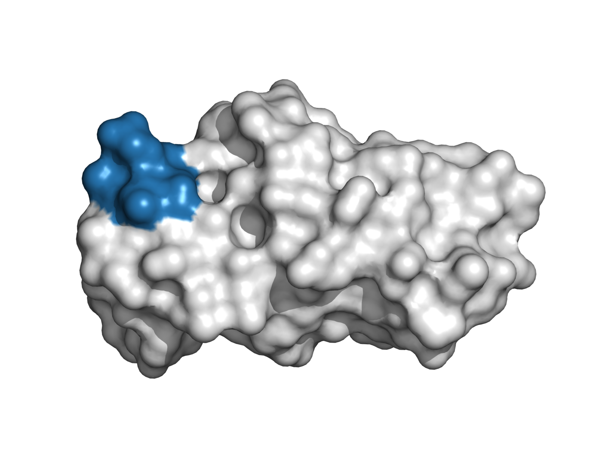
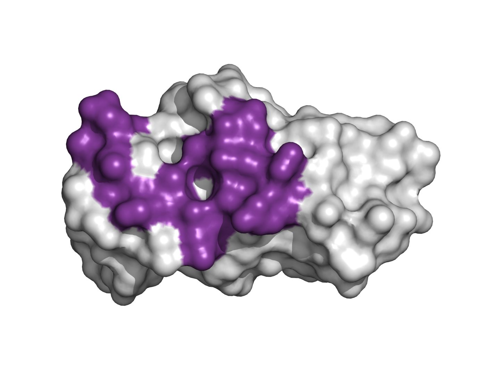
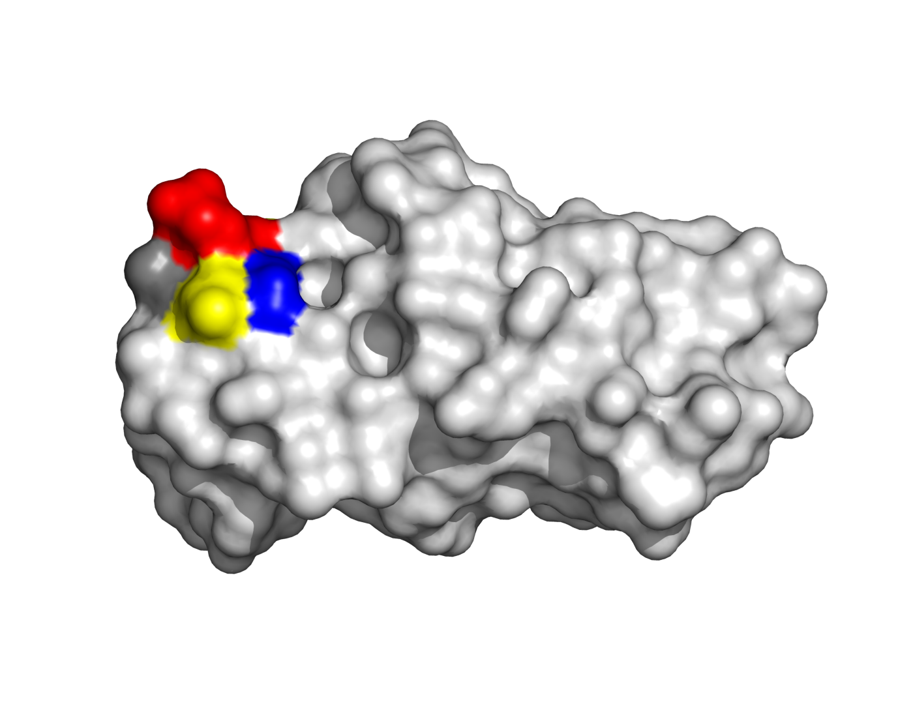
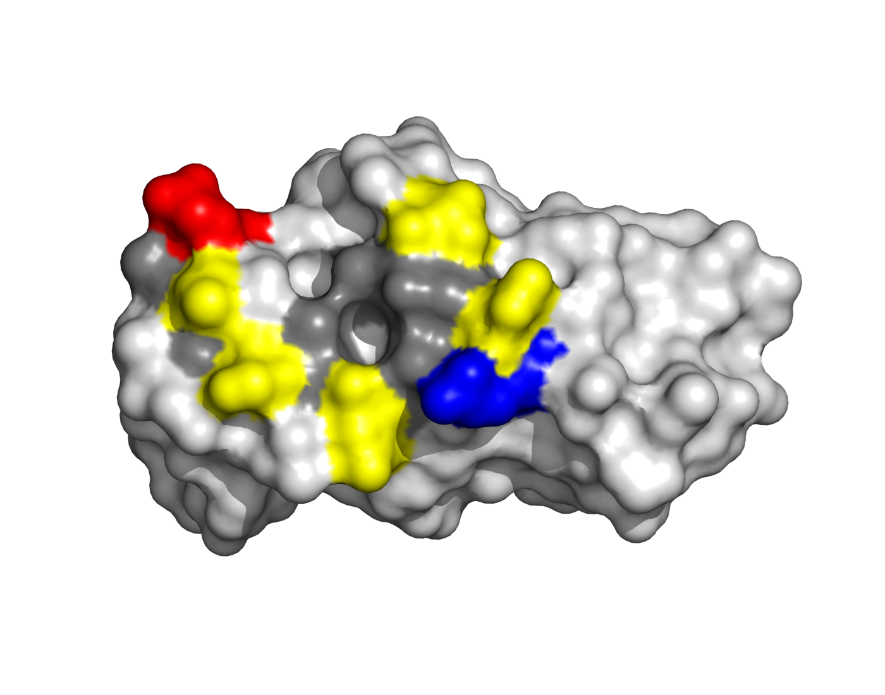
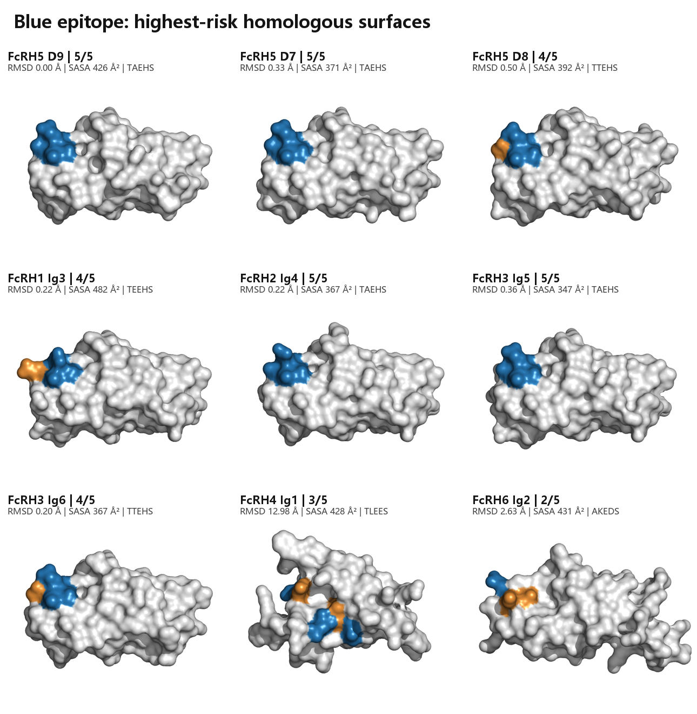
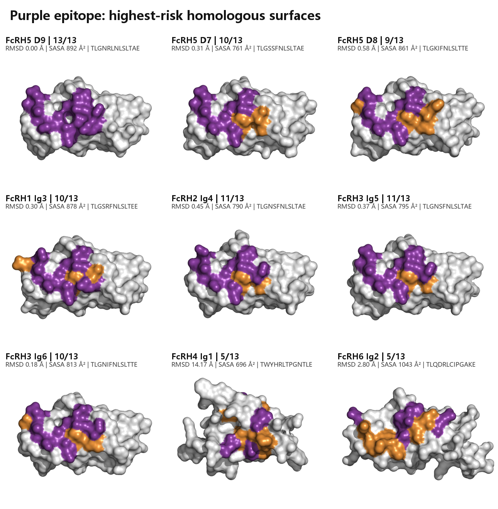
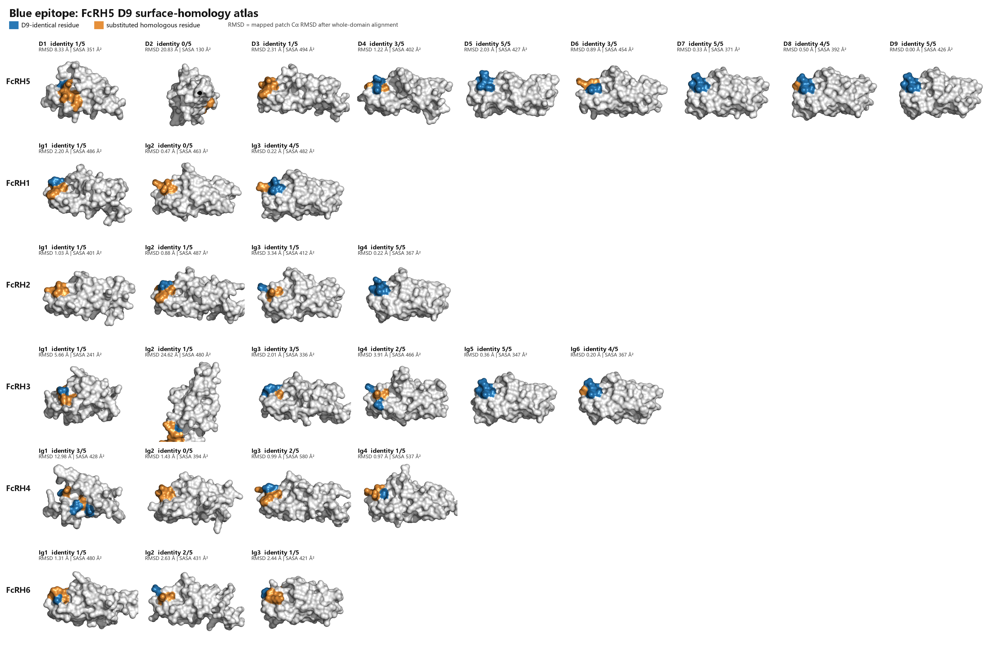
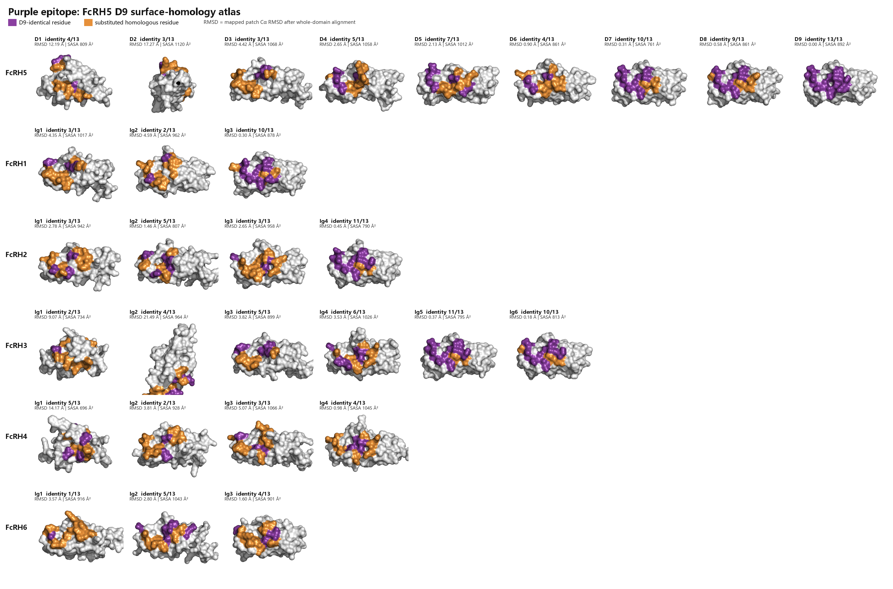

蓝链表位
T810-A811-E812-H813-S814
426 Ų 预测SASA
核心锚点：E812 / S814
表面：紧凑、极性/酸性、近似净电荷−1
基于用户上传结合图的图像约束表位恢复，结合完整ECD序列、FcRH家族同源结构表面及两份Cevostamab专利实验结果。
蓝表位为FcRH5 810–814（TAEHS），但其序列和局部表面在FcRH5 D7、FcRH2 Ig4及FcRH3 Ig5中几乎完全复现；紫表位为792–796 + 805–812，更大的表面和R796/L805/A811组合提供了更可利用的FcRH5选择性。
426 Ų 预测SASA
核心锚点：E812 / S814
表面：紧凑、极性/酸性、近似净电荷−1
892 Ų 预测SASA
核心锚点：R796 / N806 / S808
表面：较大混合面，含电荷边缘和疏水台面




| 结构域 | 序列 | 同一性 | 局部RMSD | SASA |
|---|---|---|---|---|
| FcRH5 D9 | TAEHS | 5/5 | 0.00 Š| 426 Ų |
| FcRH5 D7 | TAEHS | 5/5 | 0.33 Š| 371 Ų |
| FcRH2 Ig4 | TAEHS | 5/5 | 0.22 Š| 367 Ų |
| FcRH3 Ig5 | TAEHS | 5/5 | 0.36 Š| 347 Ų |

| 结构域 | 映射序列 | 同一性 | 局部RMSD | 关键差异 |
|---|---|---|---|---|
| FcRH5 D9 | TLGNR-LNLSLTAE | 13/13 | 0.00 Å | 目标 |
| FcRH2 Ig4 | TLGNS-FNLSLTAE | 11/13 | 0.45 Å | R796→S、L805→F |
| FcRH3 Ig5 | TLGNS-FNLSLTAE | 11/13 | 0.37 Å | R796→S、L805→F |
| FcRH5 D7 | TLGSS-FNLSLTAE | 10/13 | 0.31 Å | N795/R796/L805不同 |

29个Ig样结构域均先按全域Cα对齐到FcRH5 D9，再从同一参考视角显示。橙色替换位点和整体表面凹凸可同时判断“序列相似但结构不同”或“序列与结构都相似”。


| 专利实验 | 结果 | 本分析解释 |
|---|---|---|
| FIG.25B D9删除 | D9删除后1G7.v85失去结合 | 预测表位792–814完全位于D9，吻合 |
| FIG.25A家族FACS | 该条件下未检出FcRH1–4结合 | 完整构象组合可产生细胞水平选择性 |
| Biacore | FcRH5约2.4 nM；FcRH3约90 nM | FcRH3 Ig5表面高度相似，解释弱交叉反应 |
| Table 9 | 部分变体对FcRH2/3弱阳性 | 与FcRH2/3结构风险最高一致 |
| 膜近端功能 | D9附近表位具有更强T细胞功能 | 支持选择D9而非D7/D8作为功能表位 |
详细逐项结果：06_patent_validation_summary.csv。FcRH6未被两份专利实验覆盖。
完整文字版说明：README.md